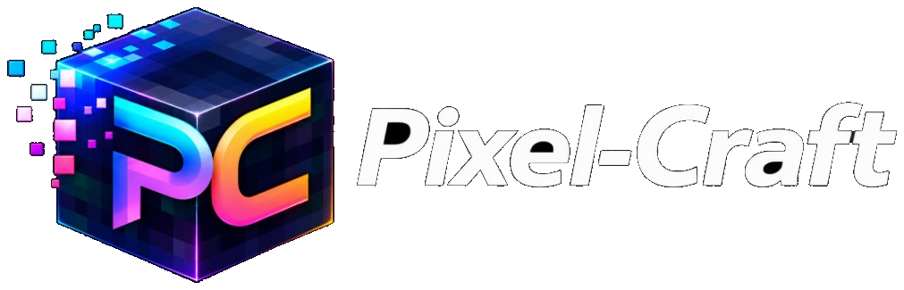

Estudio web
Sitios que se ven profesionales, cargan rápido y pasan QA.
Creamos sitios nuevos, rediseñamos los que ya se vieron viejos y corremos rendimiento y QA para que negocios locales y startups lancen sin sorpresas.
Dos tipos de equipo. El mismo oficio.
Negocios locales
Un sitio que funciona en cualquier celular, te ayuda a aparecer en búsquedas y facilita llamar, reservar o comprar.
Startups
Un sitio listo para lanzar: historia clara del producto, rendimiento defendible y QA antes de salir.
Qué hacemos
Creación de sitios
Sitios nuevos desde un brief claro: estructura, diseño y un lanzamiento que sí funciona.
Mejora de diseño
Interfaz y layout actuales, fáciles de leer y alineados con cómo se usa el sitio.
Optimización y SEO
Páginas más rápidas, markup limpio y lo básico para búsqueda y Core Web Vitals.
QA web
Pruebas en navegadores, tamaños y flujos para que el lanzamiento no sea una sorpresa.
Cómo trabajamos
Un camino corto desde la primera llamada hasta un sitio que puedes defender.
-
01
Descubrir
Objetivos, audiencia, sitio actual y qué significa “listo” para este lanzamiento.
-
02
Diseñar
Estructura y visuales alineados a tu marca. Tu voz no se diluye.
-
03
Construir
Implementación limpia y responsive, con rendimiento desde el primer pase.
-
04
QA
Lo rompemos a propósito: celulares, navegadores, formularios y caminos reales.
-
05
Lanzar
Salida a producción, lista de ajustes y una entrega que puedes mantener.